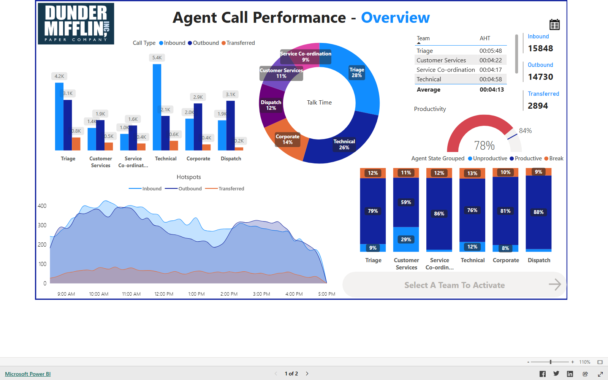
BI Dashboard
Customer Service Call Dashboard
Interactive visuals, tooltips, custom slicers, and team drill-downs built on Cisco call data.
Open live dashboardI turn messy data into Power BI dashboards, automated pipelines, and AI-driven insights that people actually use to make decisions, grounded in data engineering best practices, SQL, Python, and postgraduate research in statistics.
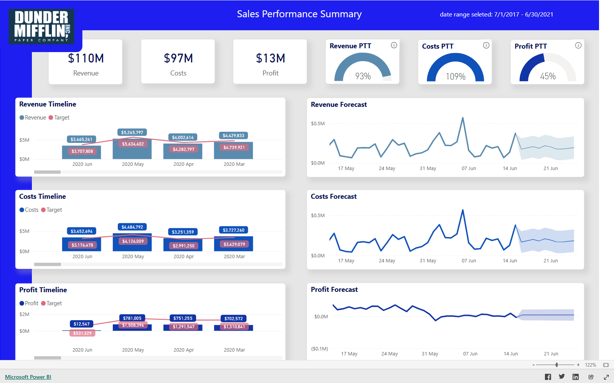
I'm a Business Intelligence Analyst with a background that bridges statistics, data science, and commercial reporting. My postgraduate research applied multilevel statistical models to real-world behavioural data, and I've carried that same rigour into building dashboards, data models, and reporting systems used by real teams.
Day to day I work across Power BI, SQL, and Python — architecting star-schema data models and writing DAX, cleaning and exploring data in SQL, and building predictive pipelines in Python. I care about dashboards that hold up under real questions, not just ones that look good in a demo.
Power BI dashboards covering sales, service, and commission reporting for real operational teams.
Star-schema data models, DAX measures, and Power Query (M) transformations built for scale.
Multilevel models, regression, and machine learning pipelines applied to real and academic datasets.
DAX, data modelling, Power Query (M), interactive reporting.
SQL Server querying, cleaning, and exploratory data analysis.
pandas, scikit-learn, and Jupyter for analysis and ML pipelines.
Star-schema fact & dimension design for scalable reporting.
Regression, multilevel models, and hypothesis testing.
Classification and prediction pipelines from raw data to model.
Dashboarding and visual analytics for exploratory work.
SLA tracking, targets, and forecasting for operational teams.
A mix of live Power BI dashboards, SQL, Python, and academic statistical work. Filter by category, or open a dashboard to explore it live.
Month-on-month sales targets, forecasts, and percent-to-target tracking across regions and offices.
Open live dashboard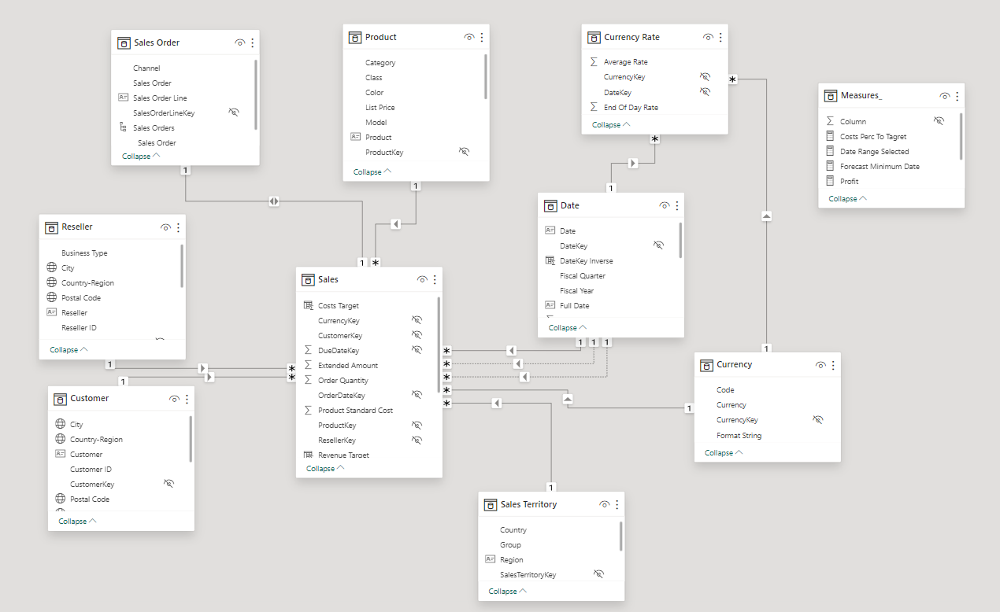
The .pbix behind the sales report: star-schema fact/dimension tables, DAX measures, Power Query (M), and a live SQL Server connection.
View project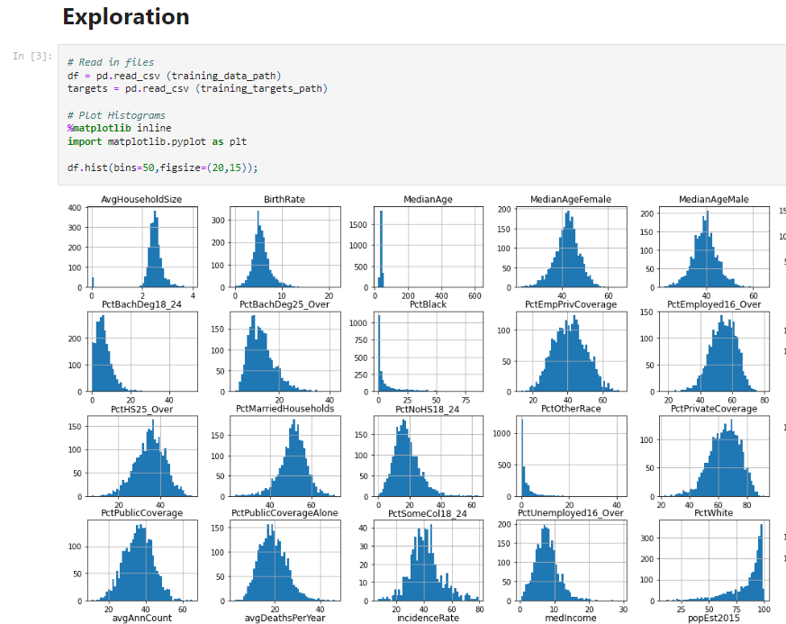
An end-to-end machine learning pipeline predicting cancer mortality rates across U.S. counties.
View project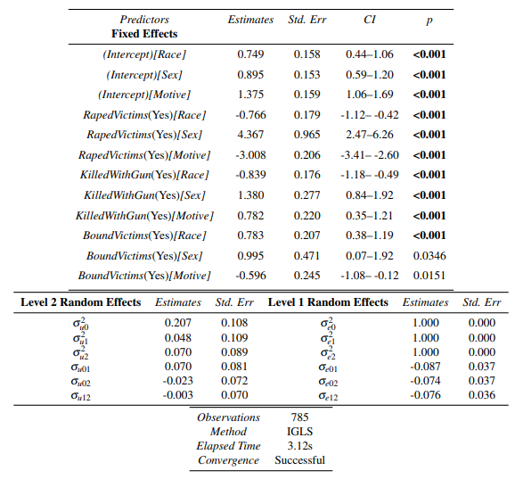
Postgraduate dissertation applying multilevel statistical models to patterns in serial offending.
View project
Interactive visuals, tooltips, custom slicers, and team drill-downs built on Cisco call data.
Open live dashboard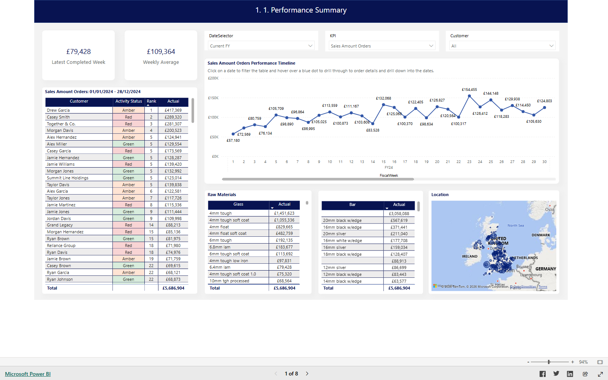
Visibility on orders, quotes, remakes, and the raw materials behind them.
Open live dashboard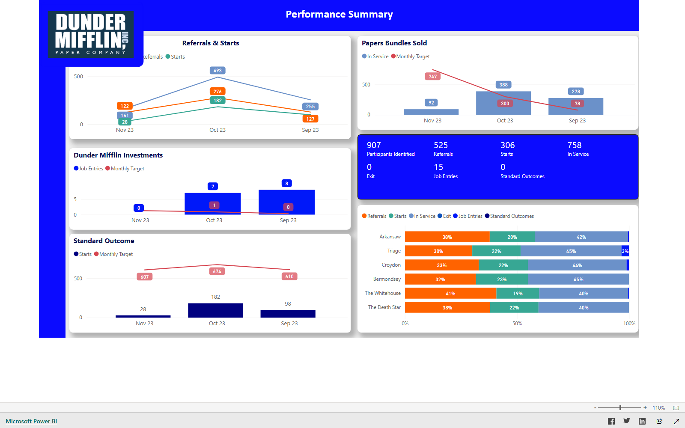
Trend analysis, forecasts, and targets at regional and office level.
Open live dashboard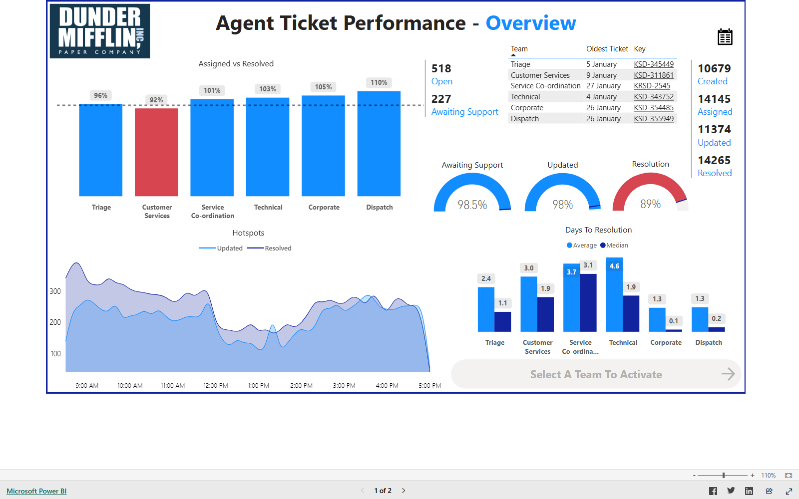
SLA statistics, oldest-ticket insights, and monthly ticket volume, built on Jira data.
Open live dashboard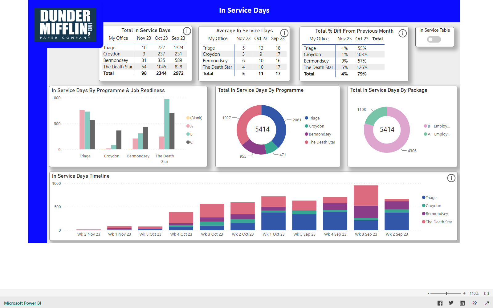
Drill-throughs and interactive tooltips across a service-provision time series.
Open live dashboard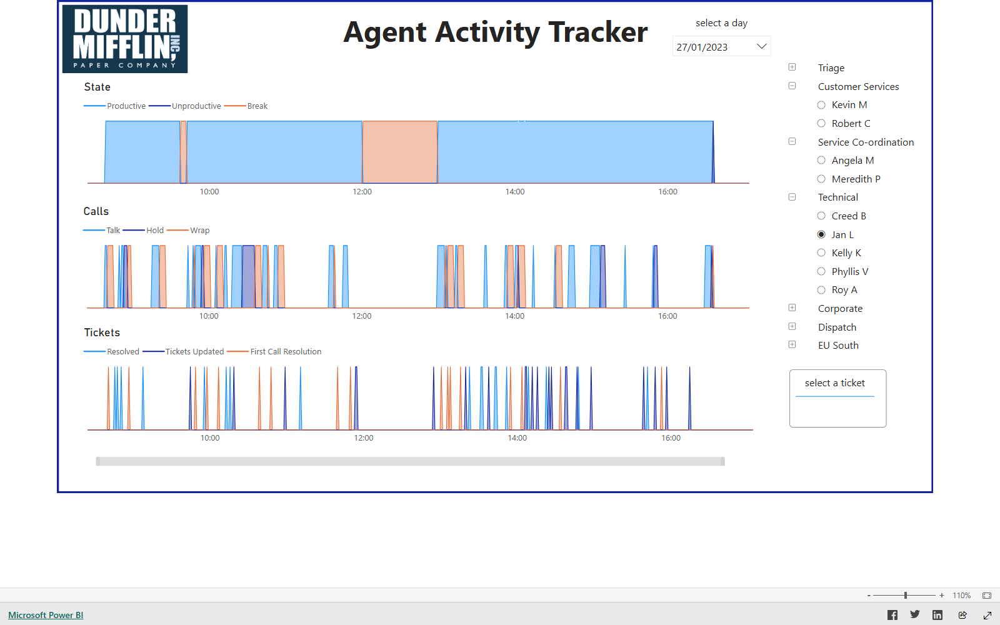
Minute-to-minute visibility into agent state, call, and ticket behaviour.
Open live dashboard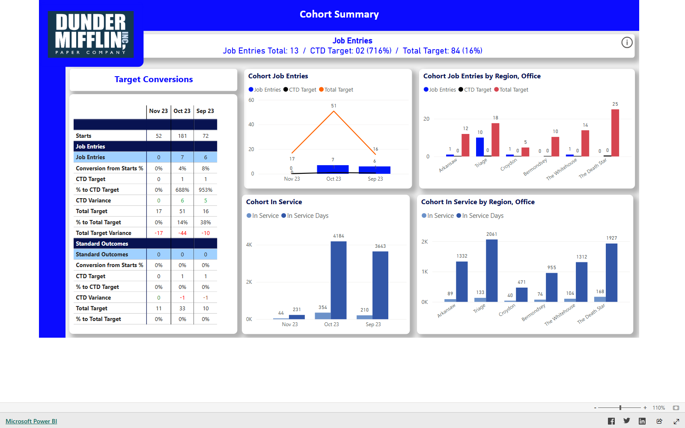
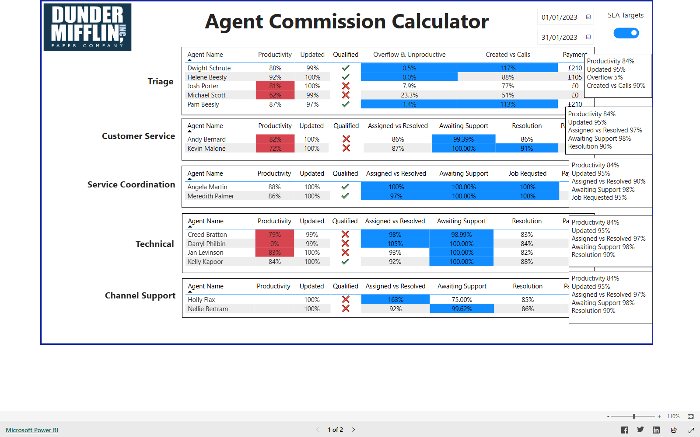
Automatically calculates monthly commission payouts with full payment transparency.
Open live dashboard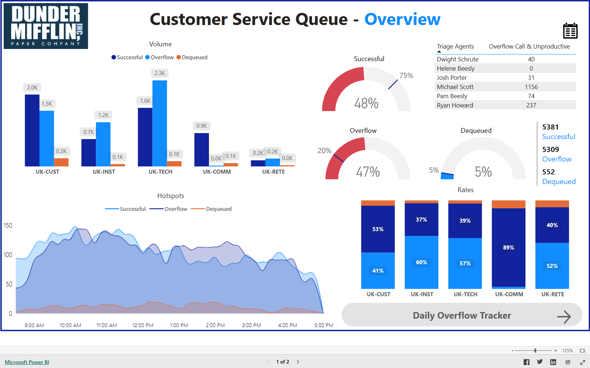
Granular insight into why overflow calls occur.
Open live dashboard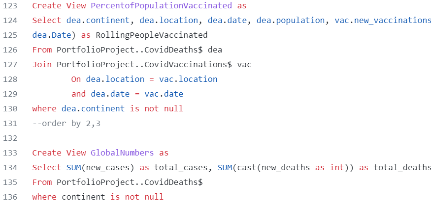
Removed duplicates, dropped unused columns, standardised formats, and joined tables to clean a housing dataset.
View project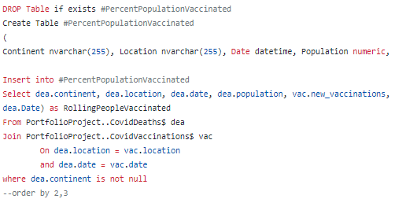
Explored a COVID-19 dataset in Microsoft SQL Server Express.
View projectMachine learning models predicting whether a startup's Initial Coin Offering reaches its fundraising goal.
View project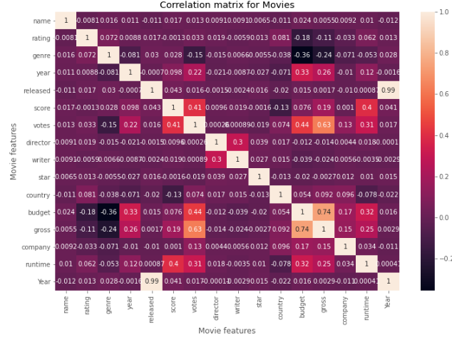
Examines which variables most affect a movie's gross revenue.
View project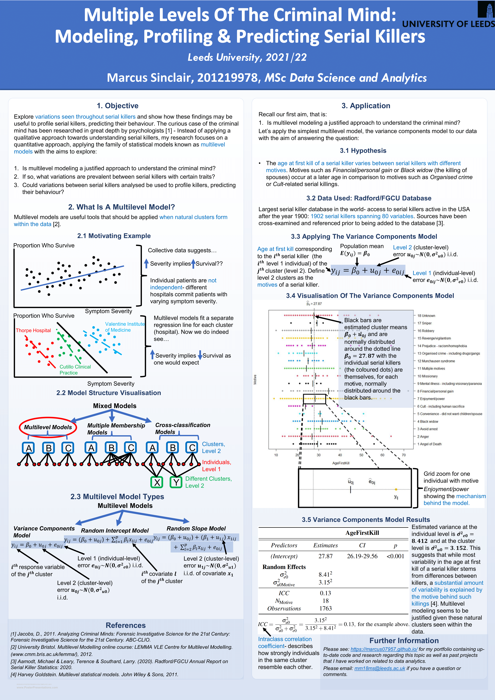
Research poster presented to thesis supervisors and colleagues.
View project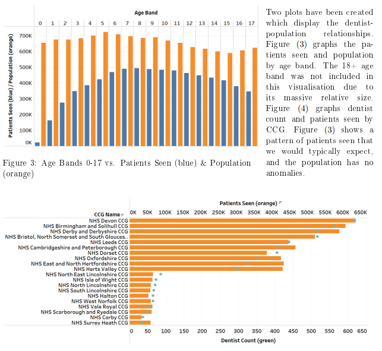
Cleaned and analysed NHS dental records at CCG level for the 2018–2019 period.
View projectExamines why pre-election polls underestimated the result in the 2016 US election.
View project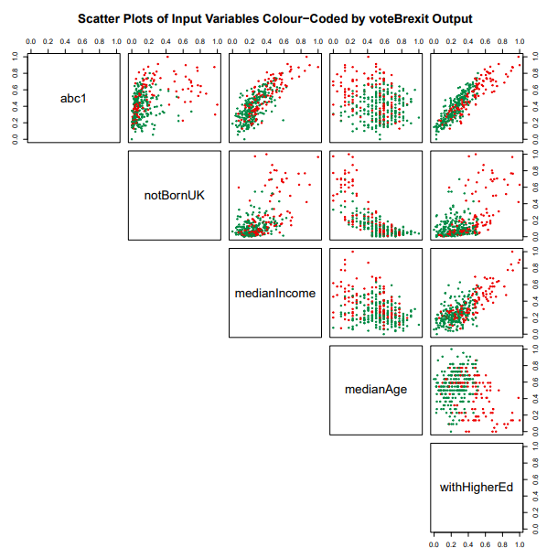
Logistic regression identifying which features best explain a ward's Brexit vote.
View projectDecision tree and random forest models predicting whether a mushroom is poisonous or edible.
View projectOpen to opportunities in data analytics, business intelligence, and reporting across business, commerce, and industry.